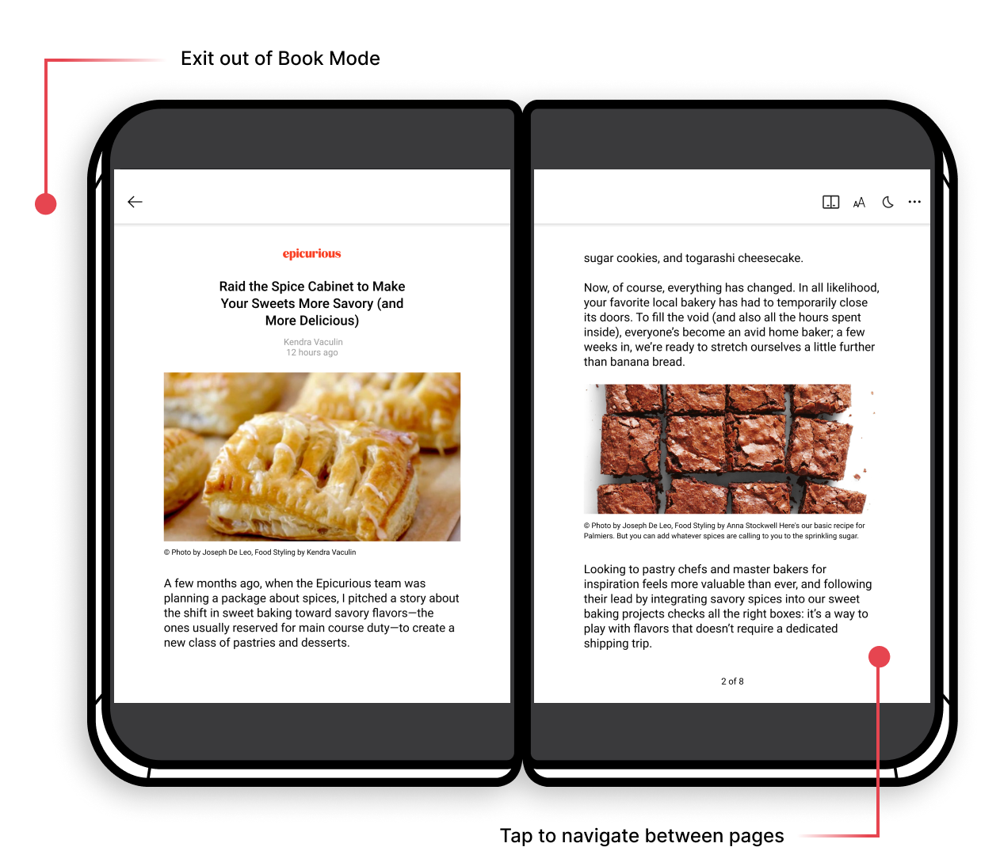
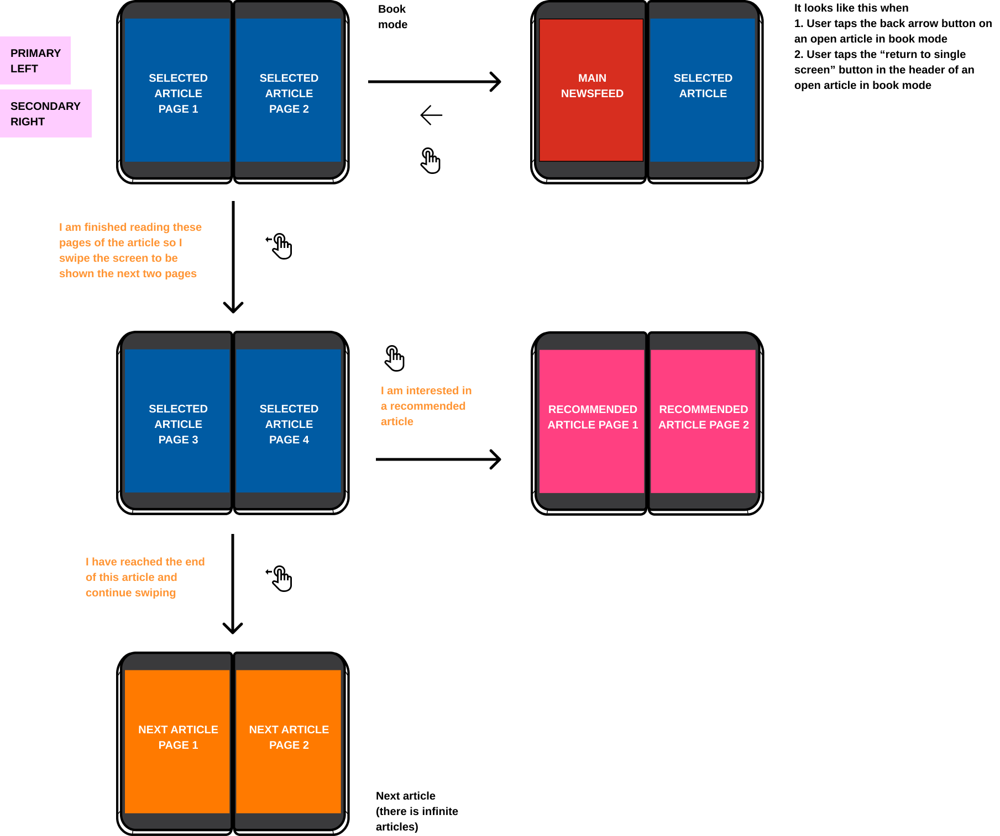

CASE STUDY — 2020
Microsoft
News on
Surface Duo
Microsoft News on the recently released Surface Duo enhances news reading for users by delivering an immersive experience with new opportunities for engagement and productivity beyond the limits of single-screen.
Over the course of four months, I worked with Microsoft News designing new features unique to Surface Duo in parallel with adapting the single-screen interactions through multiple iterations and research.
TEAM
1 product manager
5 developers
1 product designer (me)
MY ROLE
Interaction design
User research
Iterative design
Product thinking
Prototyping
DURATION
January 2020 - April 2020
Design challenge
How might we adapt and enhance the digital reading experience of Microsoft News using a dual screen device?
SOLUTION
Looking at the existing Android app for Microsoft News, we transferred the core functionality of the app (e.g. browsing articles, reading article, saving stories) to fit the Surface Duo.
To take it one step further, our team implemented Surface Duo-specific features available for Microsoft News to get more users on the device and make use of the second screen.
CONSTRAINTS
Dual screen technology and design is a limited field of resources, and we weren’t sure what to expect when it came to user behaviour.
Microsoft News is a long-existing brand within Microsoft and we had to adhere to a specific brand and design system in place to keep it consistent with the existing product on web and single screen mobile.
Impact
Shipped and available exclusively on Microsoft's Surface Duo device. Check out this article for our final product.
Here's how we did it
As we started working on the project back in January 2020, there were many unknowns coming from both design and development.
In comparison to foldable screens, Surface Duo offers two sets of information on two separate screens for multi-tasking, which produces various design patterns to connect the content.
- How do people's mental models of single screen device usage carry over to dual screens?
- How does the Surface Duo's center hinge affect how the human brain interprets the content?
- How much should be defined as a system default versus how much interface control should be allocated to users?
- How will we educate users on Duo-specific gestures and interactions?
The Microsoft News team on the project
This project was an opportunity not only to elevate the Microsoft News' reading experience, but to define new standards when it came to dual screen design. We were one of the first teams to tackle such a challenge, we knew our work would be looked at and critiqued by incoming teams shifting their work to dual screens.
We sought to set patterns, maybe even break them, establish best practices, document our knowledge for others, create expectations with our functionality, and be a benchmark to other apps entering the space.
Principles of dual-screen design
01. Deliver an intuitive pattern in its native environment
02. Emphasize function over form
03. Orient content with context where needed
04. Recognize interdependence
Design process framework
From there, we created a framework for our design process to think about as we brought news reading to dual screens. We hope our approach will help others navigate this new paradigm and encourage you to build upon our work!
A unique, notable aspect of this project was the way we measured success. My design process wasn't driven by the same metrics as Microsoft News (revenue, articles read, time spent on app) but rather focused on not disconnecting the experience our existing users were familiar with, and showcasing value for dual screen app experiences. This ended up being a big factor in all my design decisions and iterations.
value proposition
Microsoft News on Surface Duo is the new way to consume your news with a context-oriented, immersive reading experience.
Evolving from my single screen process and mindset
As the sole designer on the project, I made a lot of mistakes when it came to navigating this landscape. The external resources on dual screen design were scarce, and the Surface Duo's behaviour and research was a black box under strict privacy concerns for this new product.
Here are some of the process adaptations I had to make to fit the unique nature of this project
- Frequency of collaboration with developers
- Style of deliverables
- Testing with users
Frequency of developer collaboration
Specific to project
The developers and designers worked synchronously for this project. We were all exploring this uncharted territory together, so I leaned on them to validate my initial assumptions as "users" as we began to define mental models of dual screen usage.
My approach
Ran 2 weekly meetings with the developers to
- talk through my assumptions
- explain complex interaction diagrams
- discuss technical feasibilities as they learned about them
- review next steps in the design process
Posted project work I reviewed with my team
Style of deliverables
Specific to project
In comparison to my previous work, thinking through the right interactions and journeys with the second screen was quite literally double the complexity.
Below is an image of the 4 available device orientations on Surface Duo. Each deliverable and screen I designed had to consider each mode:
- Single portrait
- Single landscape
- Dual portrait
- Dual landscape
My approach
Each app experience I researched began with detailed flow diagrams I could use to illustrate how the user moves between the 4 modes, which preceded any visuals or designs.
Our team wanted to solidify through testing the interactions of the app before I filled in the details. Then they were handed off in conjunction with the interaction diagrams for implementation (which can be seen later).
Surface Duo device orientations
My starting point into dual screen design was defining Spanned mode's default; what happens initially when a user spans the app on both screens?
Our goal was to deliver a seamless experience that demonstrated coherency between the screens, which needed to be
incorporated into each Microsoft News experience as it would be the user's first touchpoint with dual screen technology, and we really wanted to nail it.

Testing with users
Specific to project
Our team worked on the Surface Duo prior to its public release date, so we couldn't test on non-employees and were limited to the number of devices we could access.
The software functions and front-end gestures of the Surface Duo weren't communicated to us due to privacy concerns and for the first few weeks of the project, none of us had never even used a dual screen device!
My approach
Paper prototypes were used to simulate the device's experience. We got the measurements and cut out copies of the "Surface Duo", sketching and pasting our screen designs to show our users.
In conjunction with some Figma prototypes, we were able to test several different assumptions around mental models in the beginning stages of our project. Thankfully we ended up getting some real devices!
Interactions + features of each experience
Read about the design patterns for Surface Duo outlined by Microsoft here, which I regularly referenced when defining Microsoft News on Surface Duo.
Keep scrolling to read more about some of the app experiences we implemented.
Newsfeed
The newsfeed is a high visibility feature of Microsoft News, offering a simple, stress free browsing experience.
Topic tabs
Aligned to the vertical edge of the device for accessibility and ergonomic considerations.
Spanned default
First article in the newsfeed opens on the other screen.
Pattern: Master detail
Articles open on the other screen while the user browses and clicks articles on newsfeed.
Flow behaviour diagram of the Newsfeed
Guiding questions
- What happens when the device is rotated to dual landscape? Is there value in having an extended newsfeed (i.e. two screens)
- Do we need to add highlighted indicators to let the user know which article is open from the newsfeed?
- What is the default spanned behaviour (i.e. when the user brings the app onto both screens from the newsfeed)
- How do we make the horizontal pivots on Microsoft News on single screen more accessible on Surface Duo?
Article Reader in Book Mode
The Surface Duo introduced a new form factor of reading - Book Mode, where both screens are
used for one article. This was an enhanced feature we brought to the Surface Duo as a prime selling factor of using dual screen devices.
Entry point
Duo icon on every single screen article view in the app
Pattern: Two page
Article becomes paginated with page numbers on the bottom of the screen
Pattern: Master detail
Links, photos

Flow behaviour diagram for gestures within Book Mode
Guiding questions
- How do article links behave (e.g. articles on third party websites)?
- What about countries that read from right to left?
- What is the behaviour as the user clicks into further articles within articles?
- How do we encompass Microsoft News' feature of infinite articles?

User education
Incorporating pieces of user education into our new app experience was essential for early adoption of the Surface Duo. As the designer, I worked with other app teams such as Outlook, Teams and OneDrive
to get inspiration and maintain consistency across onboarding experiences. Primarily, we wanted to ensure we were teaching users the correct gestures on the Surface Duo, and aligning with how best to use them
effectively within our respective apps.
In Microsoft News, user education was built with a full screen walkthrough, multiple illustrations, empty state screens, a session with a content writer, and several tooltip drawers
placed at our Surface Duo-specific features.
Full Onboarding Screens
Tooltip drawers
Empty state prompts
Although they look simplistic, adding these empty state prompts became a key part in communicating the best way to utilise Surface Duo for Microsoft News. Oftentimes in Spanned mode, the default would be an empty state on the other screen until the user selected to view something.
Using copy and these illustrations I created with the Microsoft illustration style guide, they're meant to guide the user and set expectations on how the second screen is meant to be used.
What did we learn?
Keep it simple
- Don’t stray away from pre-existing design patterns; they're backed by research!
- Setting user expectations is key - the consistent choice is the better choice to build the familiarity across apps and devices
No *final* right or wrong answer
- There was little opportunity to explore interactions with external users
- Expectations and feature testing is ongoing with this form factor
- With such new technology, there is a lot of opportunity to define new standards
Test everything and quantity over quality
- Our testing approach needed to be quick, and plentiful. Testing with more users to see which gestures were the most recognizable ultimately determined our direction
- Sometimes even if our entire team agreed one action was the most logical, one user could quickly disprove it with their own opinion
What's next?
Before completing the project, we worked on a handful of handoff documentation including blog posts, descriptive design process articles, presentation decks, and feature docs to pass on to the Microsoft News team and other Microsoft teams working on Surface Duo.
The team is working on refining the technical capabilities, implementing the onboarding screens, incorporating more functionality in book mode, and fixing UI issues.
There are still so many possibilities when it comes to dual screen devices and I'm excited to see where teams can take it further!